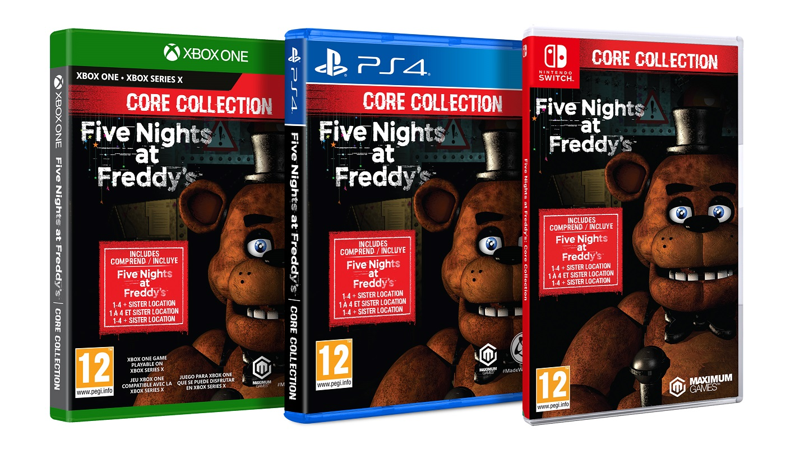
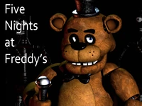
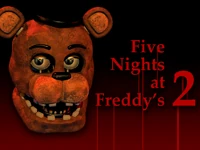
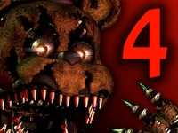

VIDEOJUEGOS 🎮
Los incontables juegos de Freddy Fazbears Pizzeria fueron creados por un desarrollador indie de videojuegos de terror llamado Scott Cawthon, ambientando a la famosa pizzeria y a los icónicos animatronicos en una lugubre y tétrica historia.
ESTO ES MERO ENTRETENIMIENTO Y NO ESTÁ RELACIONADO CON LA REALIDAD
Todos estos videojuegos no tienen similitud algúna sobre rumores de nuestros locales, es meramente trama de la saga de videojuegos creados por nuestro desarrollador Indie.

Five Nights at Freddy’s
El juego se centra en un guardia de seguridad nocturno defendiendose del constante ataque de los defectuosos personajes animatrónicos del establecimiento, rastreando sus movimientos a través del edificio utillizando un sistema de cámaras de seguridad.
Five Nights at Freddy’s 2
Un periódico mostrado tras haber completado la sexta noche revela que el restaurante cerrará y los animatrónicos modernos serán desechados, sin embargo, los cuatro animatrónicos antiguos serán guardados para cuando el establecimiento vuelva a abrir, dando lugar a los acontecimientos del primer juego.

Five Nights at Freddy’s 3
Está ambientado en una atracción con temática de terror llamada Fazbear’s Fright, construida con accesorios de los locales. La atracción tiene como objetivo capitalizar los anteriores incidentes que ocurrieron en los diversos locales del oso y sus amigos antropomórficos.
Five Nights at Freddy’s 4
Aquí asumimos el papel de Evan Afton, hijo menor de William Afton que debe sobrevivir a sus terrores nocturnos con los animatrónicos nightmare.
.jpg)
Five Nights at Freddy’s Sister Location
El jugador asume el papel de un técnico recién contratado en una instalación subterránea diseñada para almacenar animatrónicos altamente avanzados que desean escapar
.jpg)